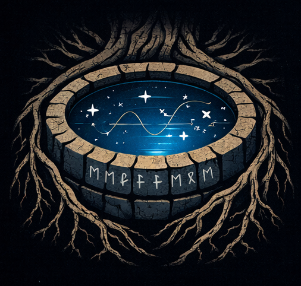

A radio interferometer never takes a picture. Each pair of stations measures a single Fourier mode of the sky — one ripple of a given wavelength and orientation. As the Earth turns, those pairs sweep out tracks in the Fourier (uv) plane, and the image we reconstruct is the true sky seen through that patchy sampling. Below, the station positions are the low-frequency component of the Square Kilometre Array (SKA-Low) station layouts. Choose a sky, cut the baselines, and watch what survives.
N stations → N(N−1)/2 baselines.
0 h = a single snapshot. Longer = Earth-rotation synthesis.
SKA-Low sits at latitude −26.8°. Only samples above 15° elevation count.
used removed (cut, or shorter than one grid cell) beyond image grid. Click anywhere to see that baseline's fringe.
What is really out there, I(l, m). No noise, no primary beam.
|V(u, v)| on a log scale. Colour = modes the array measures; grey = modes it never sees.
True sky convolved with the PSF: what the telescope hands back.
Correlating the signals of two stations separated by the baseline vector b gives one complex number, the visibility. For a small field it is the Fourier transform of the sky brightness, evaluated at the baseline measured in wavelengths, (u, v) = b⊥/λ:
V(u, v) = ∬ I(l, m) e−2πi(ul + vm) dl dm
A baseline of length |u| wavelengths responds to sky ripples (fringes) of angular period 1/|u| radians, oriented along (u, v). Because the sky is real, V(−u, −v) = V*(u, v): every baseline gives two points in the uv plane for free.
The baseline that matters is the one projected on the sky. As the Earth turns, the hour angle H changes and each baseline traces an ellipse in the uv plane. N stations give N(N−1)/2 baselines, so AA4's 512 stations give 130,816 baselines, each tracing its own arc. The declination sets the shape of those ellipses: circles at the celestial pole, flat lines at the equator.
The array samples V only where it has baselines, described by a sampling function S(u, v). Multiplying in Fourier space is convolving in image space:
Idirty = 𝓕−1[ S · V ] = I ∗ B, B = 𝓕−1[ S ]
The longest baseline sets the resolution, θ ≈ 1/umax = λ/Bmax. The shortest sets the largest recoverable scale, ≈ 1/umin. Structures bigger than that are invisible. There is no zero-length baseline, so V(0, 0), the total flux, is never measured and the dirty image always averages to zero. Natural weighting trusts every sample equally, so the densely sampled core dominates: lower noise in real data, but a fatter beam. Uniform weighting gives every sampled cell equal say: a sharper beam, at the cost of higher sidelobes and (in real life) more noise.
Thermal noise, the station primary beam, the w-term (sky curvature), bandwidth and time smearing, calibration errors, the ionosphere, and deconvolution (e.g. CLEAN) are all ignored, so the geometry stands alone. Visibilities are gridded to the nearest cell of an FFT grid whose extent is set by the field of view: cell size Δu = 1/FoV, maximum |u| = N/(2·FoV). Station positions are the SKA-Low layouts bundled with tools21cm (East-North-Up, relative to the array centre at 116.76°E, 26.82°S).